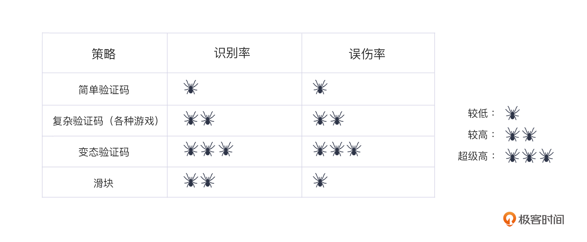

- 00 开篇词 如何突破“爬虫反爬虫”内卷之怪现状？.md.html
- 01 爬虫需求的诞生：我们是正经的软件工程师.md.html
- 02 爬虫的内卷和黑化：我们变得不正经啦.md.html
- 03 反爬虫的发展以及展望：我们也不是什么正经工程师.md.html
- 04 爬虫的首轮攻势：如何低调地拿到自己想要的数据？.md.html
- 05 反爬虫的应对之策：通用且基本的检测规则是什么？.md.html
- 06 爬虫攻势升级：分布式的意义在哪里？.md.html
- 07 反爬虫升级：如何判定你是个真人？.md.html
- 08 博弈的均衡：如何对抗道德的沦丧和人性的扭曲？.md.html
- 09 反爬虫概述（一）：高收益的后端能做哪些基本的事情？.md.html
- 10 反爬虫概述（二）：无收益的前端是怎么进行key处理的呢？.md.html
- 11 反爬虫概述（三）：前端反爬虫是怎么做信息收集的？.md.html
- 12 反爬虫概述（四）：前后端都不合适的时候如何进行处理？.md.html
- 13 反爬虫基础理论：这是唯一一节严肃的纯理论课.md.html
- 14 低耦合：如何快速下线反爬虫系统？.md.html
- 15 规则引擎：如何快速响应突发的爬虫需求？.md.html
- 16 验证爬虫：我到底要不要百分百投入？.md.html
- 17 招聘篇：如何写一个合适的JD？.md.html
- 18 如何搞定老板（上）：如何编造虚无缥缈的OKR？.md.html
- 19 如何搞定老板（中）：如何组建团队.md.html
- 20 如何搞定老板（下）：团队考核怎么做？.md.html
- 加餐 反爬虫的专家级鉴别力：用户习惯检测.md.html
- 春节加餐01 破解还是不破解，这是一个问题.md.html
- 春节加餐02 真实世界里，小心屠龙勇士变恶龙.md.html
- 春节加餐03 低调驶得万年船.md.html
- 答疑课堂 爬虫反爬虫调试对抗技巧以及虚拟机详解.md.html
- 结束语 达到理想不太易.md.html
- 捐赠
07 反爬虫升级：如何判定你是个真人？
你好，我是DS Hunter。
上一讲，我们提到了，爬虫使用分布式，可以最大程度地隐藏自己。那么最大程度是到什么程度呢，反爬虫方如何应对呢？
还是回到反爬虫的核心问题：识别爬虫。
真人检测的相关探讨
我最开始做反爬虫的时候，痛苦不堪，完全不知道如何识别爬虫。有一天，我和老婆聊天，提到了这个事情。我说我们技术领域有个新的方向，就是识别一个请求是不是真人。如果不是真人，那就要封杀，但是难点在于识别真假，根本找不到任何通用的规则来指导大家去操作。
我老婆很不屑地说了句：这有什么难的，这和我们会计识别假钱不是一样的？每一个会计都会有一些自己的理论，但是如果说通用的规则，我们只有一个，那就是：假钱一定和真钱不一样。
真的是听妻一席话如听一席话啊。我当时觉得她在逗我，但是随着反爬虫做得越来越深入，我惊讶地发现，这句无心的话，居然真的点破了反爬虫的本质：这个世界上有各种爬虫，它们唯一的共同点就是，它们和真人不一样！
那么，我们可以进行真人检测吗？如果可以，进行真人检测的方法都有什么呢？它们各自的优劣是什么呢？别急，我们一个一个说。
真人检测是否可行
首先，我们可以直接下一个结论：真人检测，理论上不可行。
为什么这么说？
我们都知道，关于真人检测，有个专门的名词，叫图灵测试。在这个测试中，测试者是一个真人，而被测试者是一台机器。在两者隔开的情况下，测试者会通过一些装置向被测试者随意提问。一旦通过，被测试者就可以被判定为真人。
我们跳出一些阴谋论或者虚无主义的假设，直接认定：真实世界，现在没有机器人能通过图灵测试，每个人都是真人。
那么，上面的说法，不是恰恰说明了没有人能把人类模拟得尽善尽美吗？为什么反倒说理论上不可行呢？从被检测者的角度来说，我们应该是能检测出谁是真人、谁是机器人的啊！
这个原因，就在检测者身上。我们的反爬系统首先是一个程序，是一个机器人。而反爬虫相当于用一个机器人来替你，去给别人做图灵测试。
还记得我刚刚说过么？图灵测试的测试者必须是真人。那么，要做这个图灵测试，首先你的机器人要通过图灵测试，也就是有了“真人的资格”，可以像真人一样思考，这个逻辑没有问题，对吧？
所以在你编写出能通过图灵测试的机器人之前，你是没办法让程序去替你识别真人的。也就是说，理论上，由于检测者这一方的问题，反爬虫的真人检测是不可行的。
你可能会问了，那就不编码，用真人来进行测试不可以吗？毕竟图灵测试就是这么干的啊。这里要注意的是，真人测试就只能一个一个地进行了，反而失去了反爬虫定义中对“批量”的强调。
没错，就是真人测试会导致无法批量检测，而机器检测又没有办法像真人一样在检测者的位置给出判断，无法检测真人。所以，真人检测，理论上不可行。
但是，真人检测的理论不可行，实际上就不可行了吗？
不是的。这个世界有很多事情是理论不可行的，但这只意味着，完美解不存在。生活中很多方案都是用近似解来进行的。我们可以在一定程度上识别出机器人，这也并不违反理论。
如果用数学来做比喻，那就是，你需要的解可能是圆周率，这个是无限不循环小数，是无法使用的。但是，你可以使用3.14进行一个近似替代，大部分情况下是可以满足你的要求的。我们的反爬虫系统，大部分情况下，也就是做到了用“3.14”的地步。
真人检测的方式方法
那么，接下来我们要讨论的所有方式方法，就是真人检测的“近似解”了。我们回到今天这一讲最开头的那句话：假币没有什么特征，它唯一的特征，就是与真币不一样。
这句话看起来像废话，但是实际上效果很好。为什么呢？我们把它变换一下，成为下面这句话：
“机器人没有什么特征，它唯一的特征，就是和人类不一样。”
下面的这些方式方法，其实就是利用了真人和机器人的不同进行检测，我们一个个来看。
各种游戏验证码
验证码本质上其实是一个游戏，可以认为是“你画我猜”。具体的判别方式简单粗暴：猜不出来？嗯，智力不行——肯定不是真人了，拦！
但是，智力这个事情，会随着时间的推移而逐步下降的。每个用户都有老去的一天，智力也会下降，最终，会被检测为“非人类”，影响使用网络。
举个例子，在图片中找出人行横道。现在你可以想一下：这个游戏是不是每个人都会做的？
不是的。
别惊讶，就拿我自己来举例子吧。我是在一个小镇出生的，第一次看到人行横道，是在大学读书的时候。在那之前，只在课本上见过。而没有读书的同学，以及家里的老人，就完全不知道人行横道是什么。哦对，人行横道，就是我们常说的斑马线。
你可以再思考一个问题：如果你给出的题目是找出所有的人行道，那么人行道是否包含人行横道？事实上，有的人就会理解为，走人的都能叫人行道。所以人行横道当然也可以选。这个问题你可以找人调研一下，会存在很多争议，这就导致很难用程序判定。
例如下面这张图，虽然也算人行道、虽然明显不是人行横道，但肯定会有人问：步行街？步行街也能算人行道吗？人行道不是马路边上的吗？
你看，这争议不就来了吗？
除此之外，就更不要说“找出所有的地瓜”这种有严重歧义的问题了。在东北的地瓜，和江苏的地瓜完全不是一个东西，这类差异会导致大量的识别错误。
变态验证码
之前在03讲，我已经介绍过了一些简单的“看图识字”验证码。那么这里，我就给你说说验证码的升级版本——变态验证码。你可以把它理解为各种游戏和简单验证码的综合、升级版本。不过，这里的“变态”，也是因为业务方需求的特殊性。
咱们之前提到过的沪牌拍卖网站，就很适合在这里给你详细介绍一下。它简直可以说是验证码的天花板，甚至，它不在乎误伤人类。
沪牌验证码是一个组合，它会让你完成五个验证码的识别，随便举几个例子：
- 给你两组数字，要求你只输入白底黑字的数字；
- 给你多组数字，要求输入绿色圆圈的那组，并且六个数字，只能输入中间四个；
- 给你一个饼图，让你输入某商品数量；
- 给你一组数字，输入不为“3”的所有数字；
- 给你一堆汉字，找出其中的成语，然后输入每个字下面的数字！
你可以先想想……你看懂这些问题了吗？是一次性看懂的吗？想退出去了吗？
所以说，这种变态验证码的代价也是很明显的，那就是很多人类都无法通过。但是这与它特殊的业务需求是强关联的。沪牌是一个刚需，并且本身就有一定的随机性，无法通过验证码，可以认为是随机的一部分。
说得更直白一点，它根本不怕劝退用户。而你的站点具备这样的强刚需吗？具备不惧怕任何劝退用户行为的心理预期吗？我相信大部分互联网公司是没有这个底气的。因此尽量不要作死。
滑块
滑块是我心目中最完美的人类检测解决方案了。因为它恰到好处地卡在了检测率与伤害性的平衡点上。
也就是说，论检测能力，他远高于普通验证码，因为他不再是检测单一的通过不通过，而是直接分析用户行为分数，打码平台基本上失去作用。论伤害性，他远低于变态验证码，只要向右滑动即可，人人都会，所以普通用户没有任何学习成本——老年人也不用在碰到“找出佩奇”这种题目的时候，到处去问谁是佩奇了。
滑块检测真人和机器的时候，恰恰就用到了前面说的： “假币和真币唯一的区别就是它们不一样”。因此，滑块并非根据某几个检测点来进行检测，而是一个全面的检测并给出概率，像是拖动的准确度、速度以及轨迹等等信息， 整个拖动过程会携带很强的个人特征，可以有效鉴别真人与机器。
滑块检测方式，在安全领域已经是成熟的技术了，甚至已经有了商业化的产品。在这里就不多赘述了，避免有广告嫌疑。
真人检测的效果对比
真人检测的效果对比分两部分，一部分是识别率，一部分是误伤率。
用一个简单的比喻来理解吧：在狼人杀中，识别率，就是你指出的好人有多大概率真的是好人，误伤率，就是你把多少好人当狼人给杀了。
我们可以汇总这样一个表格：

仔细看这个表格，你就能理解我一直推崇滑块这类方式的原因了。从识别率来看，滑块、复杂验证码，变态验证码和滑块的识别率都很高。但是，如果考虑到“友好度”这件事，当然首选是误伤率低的，也就是在简单验证码与滑块之间做选择。滑块是最优选择，而简单验证码则可以用于拦截基础爬虫。
做出这个选择的原因就是，我们可以做安全，但是绝对不能因为做安全就完全不理用户的感受，这样饮鸩止渴的安全，是我们所不能接受的。
此外，反爬虫毕竟不是安全，这里讲到的所有办法，其实都是反爬虫和安全的交界地带。在大部分公司，这些都是安全来做的。反爬虫方应该想办法和安全来配合进行这些方面的操作，而尽量不要自己去动手。 不过考虑到一些公司可能没有安全部门，反爬虫工程师只能自己干，所以，了解相关知识，依然是必备技能，否则会导致难以配合。
小结
关于真人检测，我们大概就探讨到这个地步。
今天，我们首先打成了一个共识，那就是真人检测在理论上是不可行的。但是为了在一定程度上对爬虫造成阻力，我们决定放弃完美解，开始寻求近似解。
接着，我给你介绍了三种真人检测的方式方法，分别是各类游戏验证码、变态验证码以及滑块。当然，除了这些，还有我们之前在03中介绍过的简单“看图识字”验证码。其实，你看到的那些稀奇古怪的验证码，都逃不过这些分类。几类验证码各有优劣，所以在最后，我也给它们做了一个对比。至于怎么选择，就看你的需求了。
那么今天关于真人检测的几种方式，我的建议是，如果非使用验证码，尽可能用简单易懂的，你只需要使用它拦截掉一些低级的爬虫就可以了。很多学生做毕设的时候都没有实力去弄打码平台，能弄OCR的人更是少之又少。至于高级爬虫，你弄得再变态，它也过得去，还会误伤用户，得不偿失。
我们可以和爬虫卷，但是不要卷错对象。卷死用户？用户是上帝，对上帝好一点。
不过，除了这三种检测方式，我们就没有别的方法了吗？只能依靠这些简单无脑的判断题了吗？
不是的。
在阿西莫夫所有和机器人有关的科幻小说里，经常使用一个理论，那就是：机器人和人一定有区别，普通人可能识别不出来，但是机器人专家因为经过严格的训练，能敏感的捕捉到一些细微的差别，认出机器人来——虽然每次可能检测点并不一样。
同样的道理，作为一个反爬虫专家，你要训练的也是这种敏感的鉴别力，而不是记忆一些通用的鉴别方法。
在下一讲，我会以加餐的形式，给你补充一个新的检测方式：用户习惯检测。这样的动态拦截，你也一定会需要的。
思考题
好了，又到了愉快的思考题时间。老规矩，三选一：
- 反爬在做权衡利弊时，如果你的职位和用户体验有了冲突，你是选择保自己的位置伤害用户体验，还是选择保护用户体验？
- 在你们的公司决策里，真人爬虫按照爬虫处理吗？你认为当前你们的判定方式存在什么问题？需要如何改进？
- 如果你是个爬虫工程师，发现对方在想办法提升用户体验。那么，你认为，这一点可以被你所利用吗？如何利用呢？
期待你在评论区的分享，我会及时回复你。反爬无定式，我们一起探索。
© 2019 - 2023 Liangliang Lee. Powered by gin and hexo-theme-book.